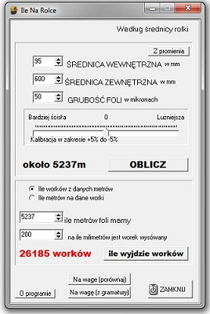

Witam na stronie Krzysztof Koduje
Do obliczania należngo wynagrodzenia
Do obliczania rozmiaru worka na chleb
Program do obliczania materiału na wałku
Program do nauki podstaw matematyki dla dzieci
Prosty kalkulator do liczeni ilosci potrzebnych klipsów
Do liczenia punktów w produkcji
Programik przetrzymujący krótkie teksty w pamięci
Zabawny zegar światowy z ukrytymi funkcjami
Symulacja kliknięć
Zabawna gra na komurkę
Program do obliczania ilości materiału na wałkach. Bardzo przydatne narzędzie pozwala zmierzyć ile metrów w moim przypadku folii jest na wałku a to tylko przy użyciu miarki lub wagi.
pobierz

oktanyimoc@gmail.com